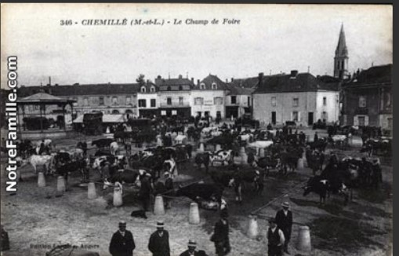

Page dédiée à votre groupe.
Vous devez visiter 4 lieux, un par un.
À chaque étape, répondez à la question et trouvez le code sur place (il est collé sur le support où se trouve la réponse).
Notez ce code dans le cadre ci-dessous pour accéder à l’étape suivante.
Notez également chaque réponse sur votre fiche. À la fin du rallye, vous devrez les annoncer devant tous les élèves de STI2D.
Foires et marchés représentaient les principales sources de revenu pour la ville au début du XIXe siècle.
Ces manifestations se développent sous l’impulsion des élus de l’époque. Dès son élection en 1800, et secondé
par des membres de son conseil municipal, le maire Michel Cesbron, directeur de la blanchisserie de Saint-Pierre et
du moulin du Pont, va avoir après la tourmente révolutionnaire, à réorganiser la vie chemilloise. En 1802,
il fait une demande pour organiser quatre foires aux chevaux. À partir de 1814, les recettes liées à l’octroi commencent
à devenir intéressantes. L’octroi est une contribution indirecte perçue par les municipalités lors de l’entrée de toutes
les marchandises sur leur territoire. Mais l’ancienne place du château où se déroulent les marchés est en bien mauvais état.
En 1809, un mur de clôture va même s’écrouler entre la buvette à Supiot et celle à Humeau. Mais en arrivant de Cholet, on ne peut
accéder à cette place que par Saint-Léonard en passant par le Pont-Madelon, la place Croix-Boulay et la porte du donjon.
Et les pentes sont très raides, il faut les adoucir. La route actuelle que nous connaissons et qui mène d’Angers à Cholet
n’est pas encore totalement tracée. La portion de la rue Nationale allant de la place Urbain II au Champ de foire, ouvre en 1 813.
Ce n’est qu’après 1 830 que le champ de foire sera accessible, côté Cholet, par la route nationale qui va se réaliser en quatre tranches.
Auparavant il n’était pas pratique d’y accéder avec une seule entrée par la porte du château.
